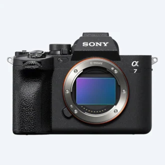
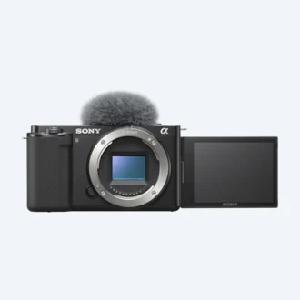
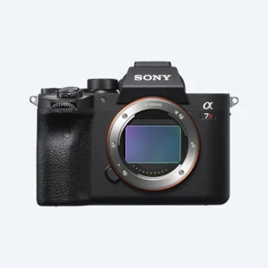
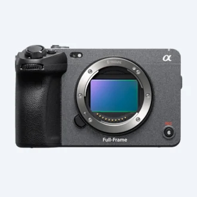
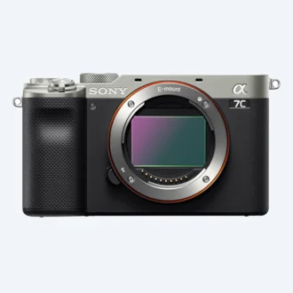
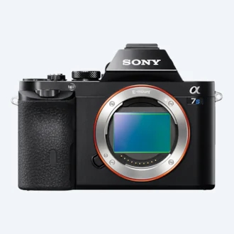
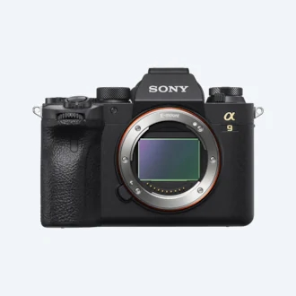
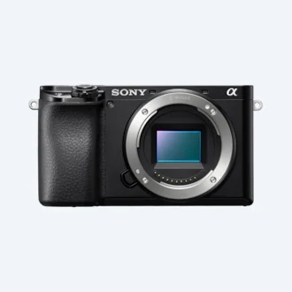

7,980,000 원

알파 7 IV 풀프레임 하이브리드 카메라
ILCE-7M4 / ILCE-7M4K
33.0 메가픽셀1 풀프레임 이면조사 Exmor R™ CMOS 이미지 센서
BIONZ XR™ 및 소니 플래그십 모델의 스틸 이미지와 영상 기능
고급 콘텐츠를 즉시 스트리밍하여 공유
비교할 제품 선택
3,090,000 원

렌즈 교환식 브이로그 카메라
ZV-E10
렌즈 교환식 브이로그 카메라
대형 APS-C 타입 24.2-메가픽셀3 Exmor™ CMOS 센서
윈드스크린이 탑재된 3캡슐 지향성 마이크
비교할 제품 선택
848,000 원

알파 7R IV 61.0MP 35mm 풀프레임 카메라
ILCE-7RM4A
61.0MP4 35mm 풀프레임 Exmor R™® CMOS 센서 및 고속 이미징 엔진
경이로운 AF 성능과 10fps13 연속 촬영
거친 환경에서 조작해야 하는 까다로운 촬영 전문가를 위한 편안함과 안정성
비교할 제품 선택
3,980,000 원

FX3 풀프레임 시네마 라인 카메라
ILME-FX3
풀프레임 Exmor R™ CMOS 센서와 강력한 BIONZ XR™ 이미지 프로세서
고감도, 넓은 다이나믹 레인지
개선된 이동성, 컴팩트하고 가벼운 본체
비교할 제품 선택
5,299,000 원

Alpha 7C 컴팩트 풀프레임 카메라
ILCE-7C / ILCE-7CL
세계에서 가장 작고 가벼운7 안정적인 풀프레임 카메라 본체
24.2 메가픽셀4 풀프레임 Exmor R™ CMOS 이미지 센서
크리에이터를 위한 다재다능한 4K 동영상 촬영
비교할 제품 선택
2,199,000 원

전문가급 영상/스틸 기능을 갖춘 알파 7S III
ILCE-7SM3
새롭게 개발된 12.1MP4 센서 및 신형 BIONZ XRTM 엔진
최대 4K/120p6의 전문가 수준 영상 캡처
스틸 이미지 또는 영상 캡처에 최적화된 고성능 하이브리드 자동 초점
비교할 제품 선택
4,799,000 원

프로 기능을 갖춘 알파 9 II 풀프레임 카메라
ILCE-9M2
고속 메모리 카드 내장 35mm 풀프레임 스택 CMOS 센서
안정적인 AF 및 AF/AE 추적으로 20fps8에서 고속 연속 촬영
전문가를 위한 세밀한 조작성 및 연결 기능
비교할 제품 선택
5,999,000 원

알파 Alpha 6600 프리미엄 E 마운트 APS-C 카메라
ILCE-6600 / ILCE-6600M
고속 0.02초9 AF 성능 리얼타임 트래킹 및 리얼타임 Eye AF
4K HDR(HLG) 10 동영상, 강력한 배터리 수명 및 헤드폰 잭
5축 바디 내장 광학 손떨림 보정
비교할 제품 선택
1,799,000 원
부가기능 ▲
1 판매가격은 사전공지 없이 변경될 수 있습니다.
2 대략적인 유효 픽셀.
3 "Hi+" 연속 촬영 모드 사용. 1/125초 이상의 셔터 속도. AF-C 모드의 최대 연속 프레임 레이트는 촬영 모드 및 사용 렌즈에 따라 달라질 수 있습니다.
4 10%의 이미지 크롭.
5 광학 바디 내장 이미지 흔들림 보정 기능을 갖춘 풀프레임 교환식 렌즈 디지털카메라 대상(2020년 9월 언론 발표일 기준, 소니 조사에 근거함)
6 "Hi" 연속 촬영 모드. 셔터 속도가 1/125초 이상인 경우. AF-C 모드의 최대 연속 프레임 레이트는 촬영 모드 및 사용 렌즈에 따라 달라질 수 있습니다.
7 2019년 8월 28일 현재 소니 자체 조사 결과. E 18~135mm F3.5~5.6 OSS 렌즈를 장착한 상태로 Pre-AF를 끄고 뷰파인더를 사용하여 CIPA 가이드라인에 따라 내부 측정 방법으로 측정.
8 3840 x 2160픽셀. XAVC S 포맷 영상 레코딩에는 Class 10 이상 SDHC/SDXC 카드가 필요합니다. 100Mbps에는 UHS-I(U3) SDHC/SDXC 카드가 필요합니다. HDR(HLG) 영상 재생 시 이 제품을 USB 케이블로 HDR(HLG) 호환 소니 TV에 연결할 수 있습니다.
9 소니 자체 조사 결과로서, E 18 ~ 135mm F3.5 ~ 5.6 OSS 렌즈를 장착한 상태로 Pre-AF를 끄고 뷰파인더를 사용하여 CIPA 가이드라인에 따라 내부 측정 방법으로 측정했습니다.
10 XAVC S 포맷 영상 레코딩에는 Class 10 이상 SDHC/SDXC 카드가 필요합니다. 100Mbps 레코딩에는 UHS-I(U3) SDHC/SDXC 카드가 필요합니다.
11 연속 "Hi+" 모드 및 연속 "Hi" 모드의 최대 8fps에서 촬영 가능하며 최대 fps는 카메라 설정에 따라 달라집니다.
12 “Hi” 연속 촬영 모드. 셔터 속도가 1/125초 이상인 경우. AF-C 모드의 최대 연속 프레임 레이트는 촬영 모드 및 사용 렌즈에 따라 달라질 수 있습니다. 일부 렌즈에는 소프트웨어 업데이트가 필요할 수 있습니다. 렌즈 호환성 정보는 소니의 지원 웹 페이지를 참고하세요. http://support.d-imaging.sony.co.jp/www/support/ilc/products/ilce9/continuousshooting/index.php?id=pdt
13 연속 "Hi+" 모드에서 최대10fps 및 연속 "Hi" 모드의 최대 8fps. 최대 fps는 카메라 설정에 따라 달라집니다.
14 XAVC S 포맷 동영상 레코딩에는 Class 10 이상 SDHC/SDXC 카드가 필요합니다. 100Mbps 레코딩에는 UHS Speed Class 3 이상 카드가 필요합니다.
15 HDR(HLG) 영상 재생 시 이 제품을 USB 케이블로 HDR(HLG) 호환 가능 소니 TV에 연결할 수 있습니다.
16 풀프레임 이미지 센서가 탑재된 디지털 카메라를 대상으로 조사한 결과입니다. 2015년 6월 보도자료 기준 소니 자체 조사 결과입니다.
17 대략적인 유효 메가픽셀입니다.
18 스틸 이미지 촬영 시 ISO 100-25600을 ISO 50–102400으로 확장할 수 있습니다.
19 30p(25p)/24p 영상 설정.
20 CIPA 표준 기반. Pitch/yaw 흔들림만 해당. Sonnar T* FE 55mm F1.8 ZA 렌즈 마운트 시. 장기 노출 NR 꺼짐.
21 XAVC S 포맷으로 동영상 촬영 시, Class 10 이상의 SDHC/SDXC 메모리 카드가 필요합니다. 100Mbps 레코딩에는 UHS-I(U3) SDHC/SDXC 카드가 필요합니다.
22 렌즈 교환식 디지털 카메라 중, 2016년 2월 기준 소니 자체 조사 결과. E PZ 16-50mm F3.5-5.6 OSS 렌즈를 장착한 상태로 Pre-AF를 끄고 뷰파인더를 사용하여, CIPA 가이드라인에 따라 내부 측정 방법으로 측정했습니다.
23 디지털 카메라 중, 2016년 2월 기준 소니 자체 조사 결과.
24 제품의 색상 및 치수는 실제와 다를 수 있습니다.
25 표시된 제품 컬러 및 기능은 모델 및 국가에 따라 달라질 수 있습니다.
26 4K: 3,840 x 2,160픽셀.
27 거주하는 국가 또는 지역에 따라 사용할 수 없는 기능이 있습니다. 제품에 설치되거나 제품을 통해 액세스할 수있는 소프트웨어/서비스의 일부 또는 전부는 사전 통보없이 변경, 중단, 제거, 일시 중단 또는 해지될 수 있습니다.